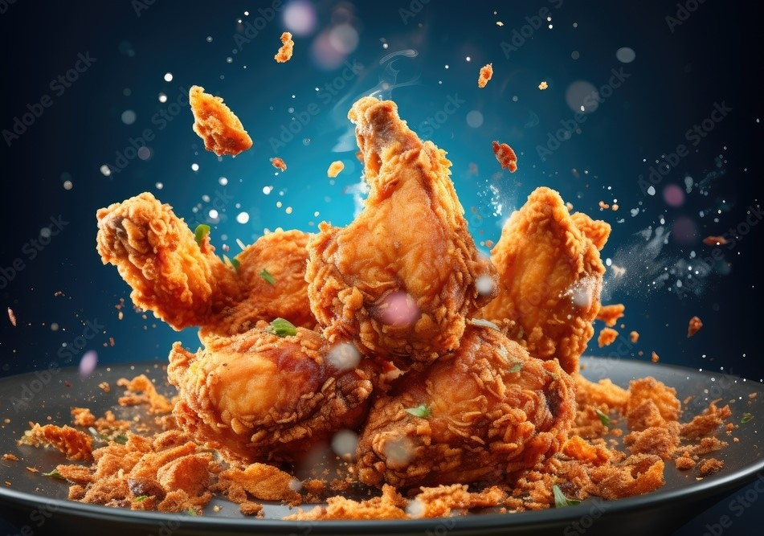
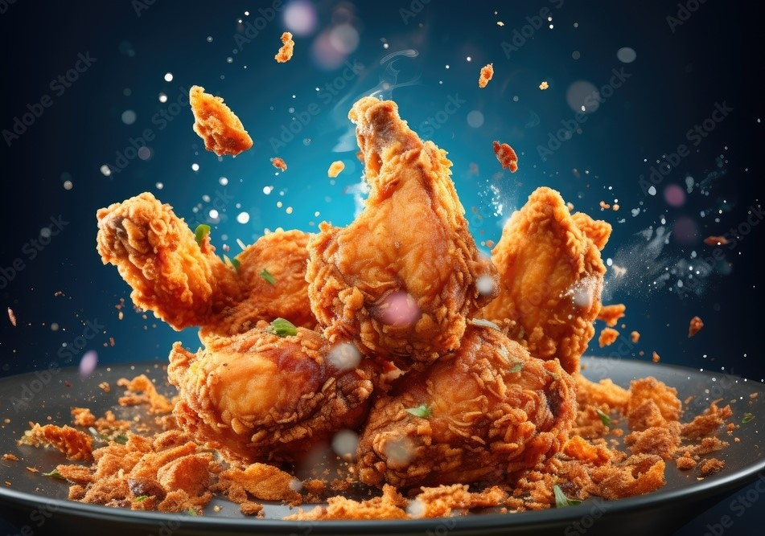

A.D.K.K.P, a renowned name in the fast-food landscape, boasts a stellar reputation backed by its remarkable five-star rating within the Eat and Drink industry. Since its inception in 1980, A.D.K.K.P has significantly shaped Australia's culinary scene, proudly spanning eight distinct locations across the nation.
Distinguishing itself not only through its delectable offerings but also through its exceptional customer service, A.D.K.K.P holds the impressive 12th rank for providing some of the best customer experiences in the country. This accolade reflects the restaurant's unwavering commitment to creating exceptional dining memories and treating every patron as an esteemed guest. Such dedication naturally translates into the restaurant's consistent five-star ratings, firmly establishing its position as an iconic culinary establishment across Australia.
A.D.K.K.P, the renowned fast food restaurant, has established itself as a culinary gem with an impeccable reputation for providing delectable dishes that have earned it a prestigious five-star rating in the Eat and Drink industry. Founded back in 1980, A.D.K.K.P has played an integral role in shaping the fast-food landscape in Australia. With a rich history spanning over four decades, this eatery has grown to become an inseparable part of the Australian dining scene, serving up an array of mouthwatering delicacies that have delighted countless palates. A.D.K.K.P's excellence is not only reflected in its food but also in its exceptional customer service. The dedication to providing top-tier service has earned the restaurant a notable distinction - it holds the 12th rank in the list of establishments with the best customer service across the country. Distinguishing itself not only through its delectable offerings but also through its exceptional customer service, A.D.K.K.P holds the impressive 12th rank for providing some of the best customer experiences in the country. This accolade reflects the restaurant's unwavering commitment to creating exceptional dining memories and treating every patron as an esteemed guest.
This accomplishment showcases the restaurant's unwavering commitment to creating memorable dining experiences, where patrons are not just treated as customers, but as valued guests. Such dedication to customer satisfaction has undoubtedly contributed to the restaurant's consistent five-star ratings and has solidified its place as a beloved culinary institution in Australia. A.D.K.K.P's success story is not limited to its gastronomic offerings and customer service. With eight strategically located outlets, the restaurant has managed to bring its delectable creations to a widespread audience, allowing people from various corners of the country to savor its culinary delights. The impact of A.D.K.K.P on the Australian culinary scene is undeniable, and its journey from a small eatery in 1980 to a prominent nationwide brand today is a testament to its unwavering dedication to quality, taste, and service.
| Day | Opening Time | Closing Time |
|---|---|---|
| Monday | 10:00 AM | 9:00 PM |
| Tuesday | 10:00 AM | 9:00 PM |
| Wednesday | 10:00 AM | 9:00 PM |
| Thursday | 10:00 AM | 9:00 PM |
| Friday | 10:00 AM | 10:00 PM |
| Saturday | 11:00 AM | 10:00 PM |
| Sunday | 11:00 AM | 9:00 PM |
At A.D.K.K.P, our burgers are a celebration of flavor and quality. Crafted with the finest ingredients, our classic beef burger stands as a testament to our commitment to culinary excellence. Each bite offers a harmonious blend of succulent beef, fresh lettuce, ripe tomato, and melted cheese, creating a symphony of tastes that satisfies every palate. For those seeking variety, our menu boasts an array of options, from the zing of the Spicy Jalapeno Burger to the rich flavors of the Bacon and Mushroom Burger. Whether you're a carnivore or a vegetarian, our burgers are a gastronomic journey you won't want to miss.
Crunch into indulgence with our exquisite selection of chips at A.D.K.K.P. Our Crispy Potato Chips are a crowd favorite, seasoned with just the right amount of sea salt for that perfect balance of saltiness and crunch. Looking to elevate your chip experience? Our Garlic Parmesan Chips, delicately coated in a blend of garlic and parmesan, deliver an explosion of savory notes. And for those who crave a touch of decadence, the Truffle Fries with Parmesan offer a glimpse into a world of gourmet luxury. From the classic to the gourmet, our chips menu is a testament to our dedication to delivering extraordinary taste.
At A.D.K.K.P, we understand that the right beverage can enhance every dining experience. Quench your thirst with our array of drinks, each thoughtfully chosen to complement our menu. From the effervescent charm of classic sodas to the refreshing allure of our Iced Tea, every sip is designed to harmonize with our culinary creations. For a taste of nostalgia, indulge in a Root Beer Float that combines creamy delight with bubbly nostalgia. Our drinks menu is a symphony of flavors, ensuring that every visit to A.D.K.K.P is a complete sensory journey. Each element of our menu, from the burgers to the chips and drinks, is a reflection of our passion for culinary excellence. With every bite and sip, you're invited to experience the devotion we pour into crafting unforgettable taste sensations.
 


A.D.K.K.P's impact extends beyond its culinary prowess and service excellence. With a presence in eight strategic locations, the restaurant has made its tantalizing dishes accessible to diverse communities throughout Australia. This journey from its humble beginnings in 1980 to its present-day status as a multi-location sensation is a testament to A.D.K.K.P's enduring dedication to delivering top-tier taste experiences and exceptional customer service, creating a legacy that continues to thrive.